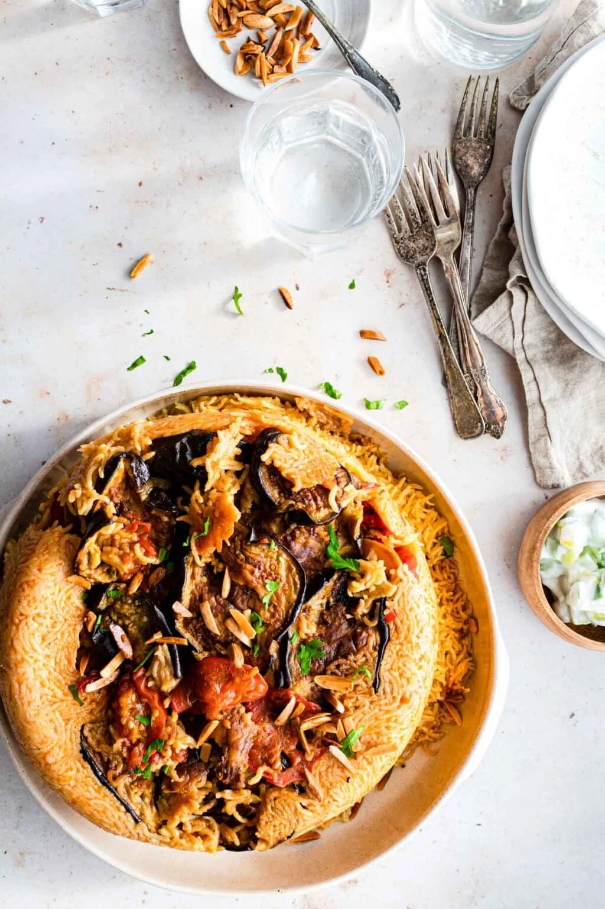
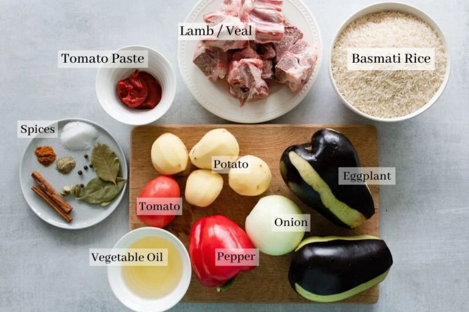
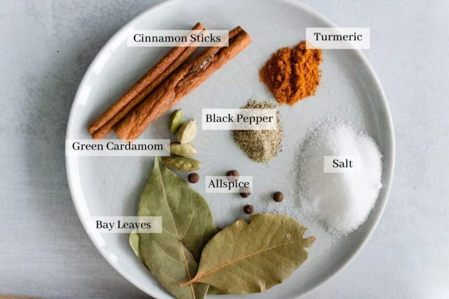
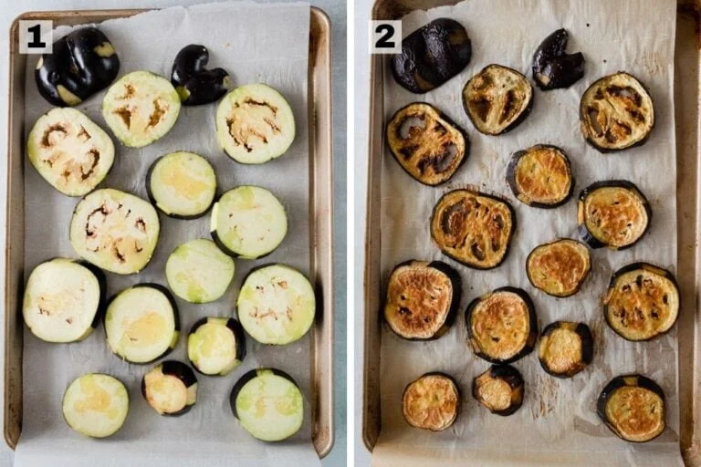
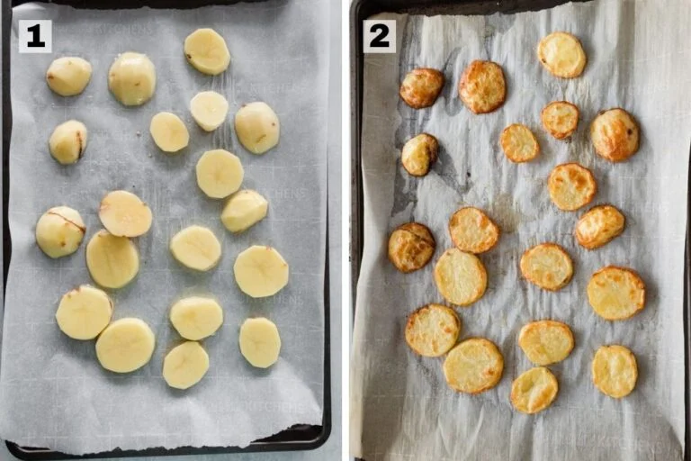
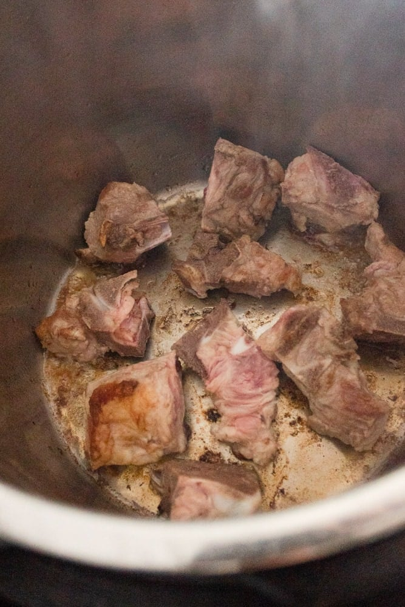
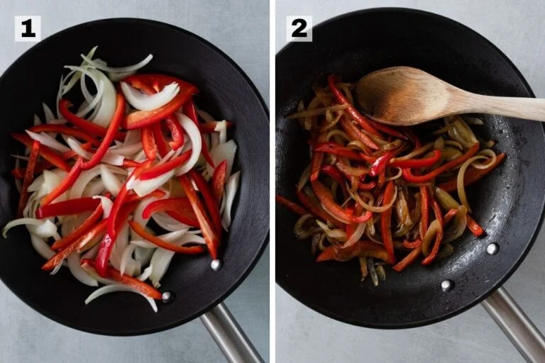
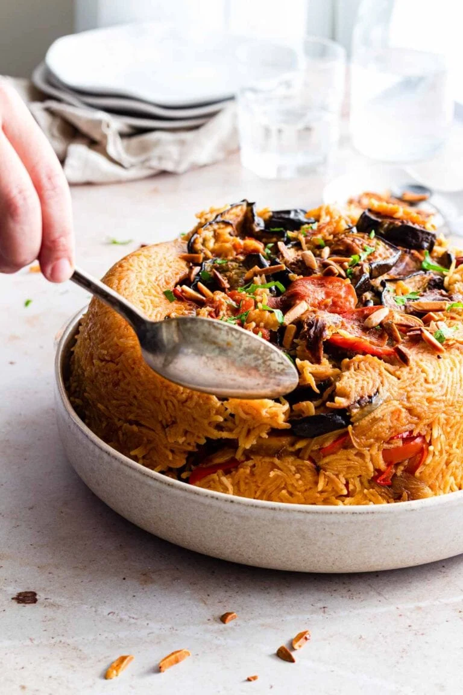

Maqluba (or maqlooba, makloubeh, maqlouba - however you want to spell it!) is a famous middle eastern rice, vegetable and meat dish that will impress any guest. The unique thing about this dish is how it is carefully layered, cooked, then flipped upside down to reveal the delicious vegetables and meat. Don't be intimidated by how it looks, it's easy to execute. Many 5-star reviews later, this recipe is a reader favourite!

Maqluba is a dish commonly made across various Arabic countries like Iraq (where I'm from), Palestine, Jordan and Syrian. Each household probably has their own way of preparing this famous dish. But one thing remains true amongst all versions: it's a layered dish using rice, vegetables and meat.
The idea behind layering the vegetables and meat underneath the rice then cooking everything together allows all the flavours to beautifully melt into each other. It's cooked low and slow to give time for the flavours to develop and to also prevent the vegetables from burning, since they're underneath the rice. Before we get into the recipe, let's address some common questions about Maqluba.
The vegetables used in maqluba are eggplant, potato, and cauliflower.Some versions use only cauliflower and eggplant, some use eggplant and potato, and some use all three. I find that these 3 vegetables give so much flavour that makes maqluba delicious. Then you can add other vegetables you have on hand. There are no hard and fast rules when it comes to this! I personally love adding onions and peppers because it amps up the vegetable flavours and adds a delicious sweetness. My mom also adds green beans or carrots if she has them. Tomato slices are also typically used at the very bottom of the pot to help prevent anything from sticking.
My favourite type of meat to use is pieces of lamb (shoulder or leg) or veal. I find that they're tender and create an amazing stock that is used to cook the rice. You can also use bone-in chicken pieces (any cut will do), which also turns out delicious.
I don't recommend using stew beef as it tends to be tougher and will take a lot longer to cook. However, you can use ground beef and I've seen that work out great too. As for the amount you add, the one listed in the recipe is the minimum amount. Add more if you like, depending on whether or not you love it more meaty.
I always use long grain basmati rice for Maqluba. The reason for this is that we cook it low and slow, and we need the rice to be able to handle a long cooking time and additional moisture from the vegetables. Basmati rice works great and doesn't become mushy! However, you can certainly use medium grain rice or Egyptian rice and just adjust the rice to water ratio
The best tip I can give is to use a non-stick pot. It is MUCH easier to flip it and get a clean release. It helps to have a pot with straight edges and one that is more wide than narrow. This will ensure that the steam/heat doesn't have to travel as far up as it would if the pot was narrow and tall, and you get a more even cook on the rice. If the pot is really tall, the top layer of rice will be harder to cook through. If the only pot you have is a narrow one, try to make a smaller amount so you don't stack it too high!
The ingredients will depend on the type of meat you choose and what other vegetables to add. But for this recipe, I love using eggplant, potato, onion, pepper and tomatoes. I never skip any of those! You can also choose to add cauliflower with them or instead of the potato.

I use whole spices to cook the meat in and create the stock. You don't have to use all of them, but I highly recommend using the cinnamon sticks, green cardamom, and bay leaves. I also like to throw in some whole allspice, peppercorns or cloves if I have them. And then when we cook the stock further I add in the turmeric, salt and black pepper.
There are other methods of maqluba where the uncooked rice is mixed with some ground spices such as turmeric, 7 spice (a Lebanese spice mix), or allspice. I don't do this because I find that the broth is really flavourful from the whole spices, and the traditional Iraqi method relies on a more subtle spice flavour and allows the vegetables to shine.

Making maqluba is actually easy, but it requires several steps and pre-cooking and pre-seasoning the meat and vegetables before layering everything. Typically, vegetables are fried before layering. However, I love roasting them because its healthier and easier, yet still yields a delicious result. Here's how it goes:




